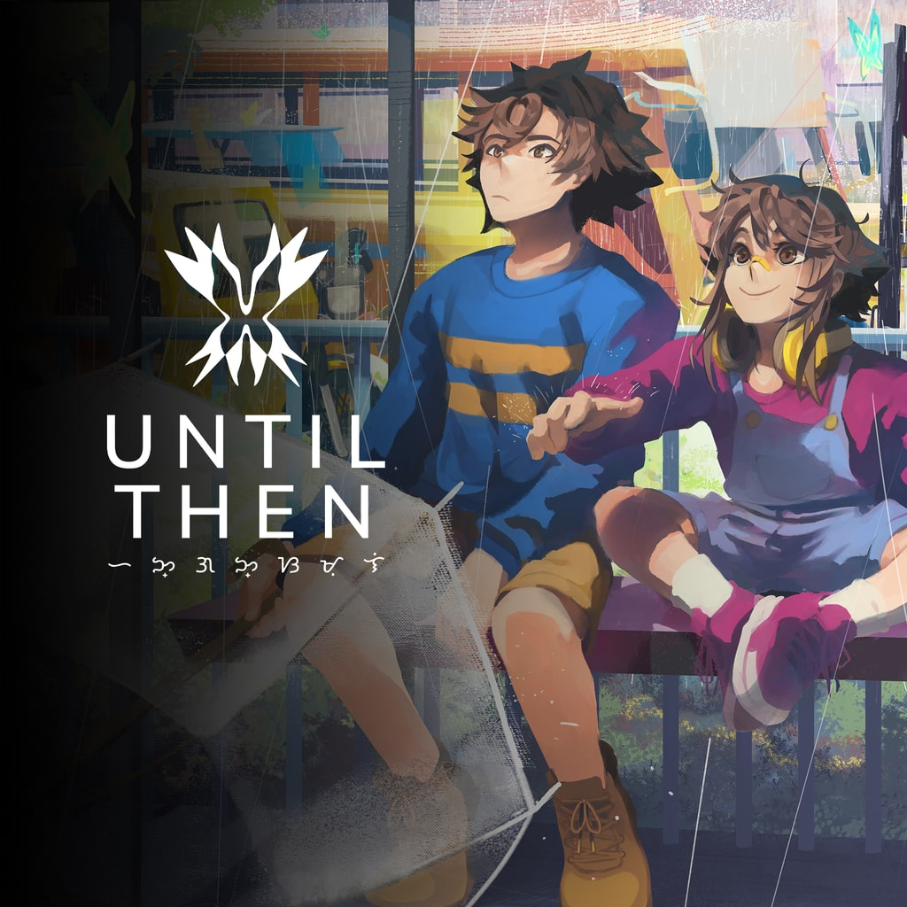
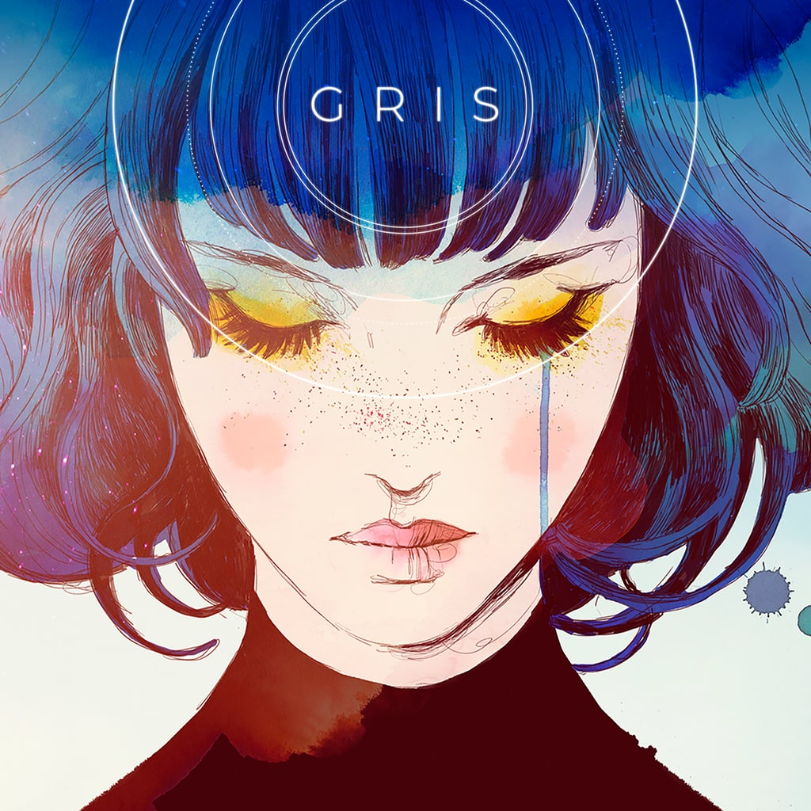

Until Then
Played on: PC
I actually haven't finished this game yet, but I have a feeling it'll be a while so I'm just
logging it now. I can only handle playing one chapter at a time because the story is so
emotional and anxiety inducing for me. 10/10. We love suffering in this house.

GRIS
Played on: Switch Lite
The people were not lying when they said GRIS is one of the most beautiful games out there.
This is the level I need all my platformers to operate at. I think I do prefer my
games to have a more straightforward plot, however. Portability really suits the explorative
play style, but I'm sure I lost details to the smaller screen.
HalOPE
Played on: PC
Very cute aesthetics! Certainly much to think about storywise. My ending felt really narratively
satisfying uwu